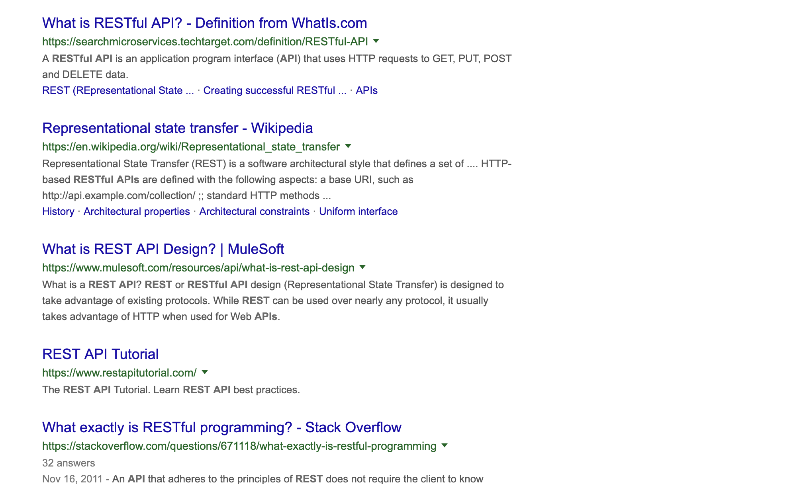

Gatsby
JuniorDev.SGHi, I'm Wei
@wgao19
Co-Instructor
Nut 🇹🇭

If you feel like you’ve learned something in the past few years I deeply recommend starting a blog, if only to catalog your thoughts.
— Dan Abramov (@dan_abramov) December 30, 2018
I like to have full control over the experience.

Add bento
538ac80
export function formatReadingTime(minutes) {
let cups = Math.round(minutes / 5);
let bowls = 0;
if (cups > 5) {
return `${new Array(Math.round(cups / Math.E))
.fill('🍱')
.join('')} ${minutes} min read`;
} else {
return `${new Array(cups || 1)
.fill('☕️')
.join('')} ${minutes} min read`;
}
}

References
- Overreacted
- Making Website Building Fun Gatsby embraces simplicity, which makes building your website both fun and meaningful
What is Gatsby
Static Site Generator
Content pages are pre-built instead of requested from and generated by a server.
based on React + GraphQL
- Layout, templates, and reusable UI parts are all React components.
- GraphQL manages all the data and asset queries

original tweet
My website is faster than yours.
Built for the next billion users.
Flexible with the content mesh.
Simple
Building Blocks
- Gatsby Starters
- Gatsby Plugins
- Gatsby Themes experimental
References
- StaticGen
- ReactJS
- GraphQL
- Gatsby Starters
- Gatsby Plugins
- Silly Name, Serious Stuff Intro to a talk about JAMStack by Phil Hawksworth that will happen in Pixel Pioneers in June
- PRPL Pattern
- Web Performance 101 — also, why is Gatsby so fast
Up and running
Environment dependencies
- git
- node.js version >= 8
- gatsby-cli
$ npm install -g gatsby-cli
$ gatsby-cli --version
Gatsby CLI commands
$ gatsby new name-of-your-site url-to-starter # defaults to gatsby-starter-default
$ gatsby develop # starts a hot reload server
$ gatsby build # may be run by your deployment service
$ gatsby serve # serves production build
$ gatsby info # info about your system and your package
$ gatsby clean
Setting up the site
$ gatsby new anyhowly-rocks https://github.com/Vagr9K/gatsby-advanced-starter
gatsby-cli/src/init-starter.js
- clones the git repo of your starter
- installs dependencies
- copies the starter files
- removes .git directory
$ cd anyhowly-rocks
$ gatsby develop

Package structure
$ tree -L 1 # trimmed
.
├── content # blog posts in md
├── data # meta data about the site
├── gatsby-config.js # configurations for gatsby site gen
├── gatsby-node.js # page generation
├── public
├── src
└── static
gatsby-config.js
- siteMetadata (object)
- plugins (array)
- pathPrefix (string)
- polyfill (boolean)
- mapping (object)
- proxy (object)
- developMiddleware (function)
gatsby-node.js
Learn more at Gatsby's API Reference
gatsby-config.jsgatsby-node.jsgatsby-browser.jsgatsby-ssr.js
References
Layouts
$ tree src -L 2
src
├── components
│ ├── About
│ ├── Disqus
│ ├── Footer
│ ├── PostListing
│ ├── PostTags
│ ├── SEO
│ ├── SocialLinks
│ ├── UserInfo
│ └── UserLinks
├── favicon.png -> ../static/logos/logo-48.png
├── layout
│ ├── index.css
│ └── index.jsx
├── pages
│ ├── about.jsx
│ └── index.jsx
└── templates
├── b16-tomorrow-dark.css
├── category.jsx
├── post.css
├── post.jsx
└── tag.jsx
Pages
Gatsby core automatically turns React components in src/pages into pages
Create a new page under src/Pages/
// anyhowly.jsx
import React from "react";
export default () => anyhowly;
Page Layout
// src/layout/index.jsx
export default class MainLayout extends React.Component {
render() {
const { children } = this.props;
return (
{children}
);
}
}
Add a header to layout
Use layout at custom page
Add an intro to layout
Go to post listing component
References
Blog Queries
GraphQL
GraphQL is a query language for your API, and a server-side runtime for executing queries by using a type system you define for your data. GraphQL isn't tied to any specific database or storage engine and is instead backed by your existing code and data.
Query Language
Rest API
Rest API v.s. GraphQL
GET /users/420
GET /users/420/posts
GET /posts/132
GET /posts/132/comments
user(id: $userId) {
name
posts {
author {
avatar
name
}
content
comments {
author {
avatar
name
}
}
}
}
Add excerpt to post listing
Customize GraphQL query
Querying static assets
gatsby-image
gatsby-imagegatsby-transformer-sharpgatsby-plugin-sharp
// gatsby-config.js
plugins: [
`gatsby-transformer-sharp`,
`gatsby-plugin-sharp`,
// ...
]
export const query = graphql`
query IndexQuery {
allMarkdownRemark() {
# ... other queries
}
file(relativePath: { eq: "logos/logo-1024.png" }) {
childImageSharp {
fixed(width: 125, height: 125) {
...GatsbyImageSharpFixed
}
}
}
}`
References
Styling
- Plain CSS
- Sass / Less
- CSS Modules
- CSS-in-JS
Using SASS with Gatsby
$ yarn add sass gatsby-plugin-sass
$ # or
$ npm install --save sass gatsby-plugin-sass
// in gatsby-config.js
plugins: [
{
resolve: `gatsby-plugin-sass`,
options: {
implementation: require("sass"),
},
},
]
CSS Modules
CSS Modules is a build step (with the help of Webpack or Browserify) that changes class names and selectors to be scoped.
Add styling to layout
- Container
max-width - Font for headings
Pause to add more styling
"Dark Mode" 🌚🌝
References
Styling
Typography


Although many books define the purpose of typography as enhancing the readability of the written word, one of design’s most humane functions is, in actuality, to help readers avoid reading.A Type Primer by John Kane
- A selection of existing typography themes
- Highly customizable
Installation
$ yarn add gatsby-plugin-typography react-typography typography
$ # or
$ npm install --save gatsby-plugin-typography react-typography typography
Configuration
// gatsby-config.js
plugins: [
// ... other plugins
{
resolve: `gatsby-plugin-typography`,
options: {
pathToConfigModule: `src/utils/typography`
}
},
]
Using an existing theme
Browse at Typography.js's demo site
// src/utils/typography.js
import Typography from "typography";
import themeElkGlen from "typography-theme-elk-glen"; // need to add dependency
export default new Typography(themeElkGlen);
Customizing Typographyjs theme
// src/utils/typography.js
import Typography from "typography";
themeElkGlen.overrideThemeStyles = ({ rhythm }, options) => ({
'h1': {
marginBottom: rhythm(1/2),
marginTop: rhythm(2),
}
})
export default new Typography(AnyhowlyRocksTheme);
Setting Baselines
- baseFontSize
- baseLineHeight
- scaleRatio
Google Fonts
googleFonts: [
{
name: "Bevan",
styles: ["400"]
}
],
headerFontFamily: ["Bevan", "Futura", "sans-serif"],
Style picker tool at demo site
`overrideStyles`
Imperative API for directly adding to or overriding auto-generated styles. It’s called with a Vertical Rhythm object, the options object, and the algorithmically generated styles.
overrideStyles: () => ({
"*": {
background: "#222",
color: "#eee"
},
"@media and (min-width: 35rem)": {
maxWidth: "35rem"
},
"blockquote > :last-child": {
marginBottom: 0,
},
})
Vertical Rhythm
Compass Vertical Rhythm
overrideThemeStyles: ({ rhythm, adjustFontSizeTo }, options, styles) => ({
'h2,h3': {
marginBottom: rhythm(1/2),
marginTop: rhythm(2),
},
blockquote: {
...adjustFontSizeTo('19px'),
color: gray(41),
fontStyle: 'italic',
paddingLeft: rhythm(13/16),
marginLeft: rhythm(-1),
borderLeft: `${rhythm(3/16)} solid ${gray(10)}`,
},
})
References
Plugins
- Source:
gatsby-source-*, -
Transformer:
gatsby-transformer-*, -
Helpers:
gatsby-[plugin-name]-*, - Others:
gatsby-plugin-*,
what type are the following plugins
- gatsby-source-filesystem
- gatsby-transformer-remark
- gatsby-plugin-web-font-loader
- gatsby-remark-oembed
RSS Feed
Embedding Instagram Post 🙈
We need
gatsby-remark-oembed
Installation
gatsby-remark-oembed
$ yarn add @raae/gatsby-remark-oembed
$ # or
$ npm install @raae/gatsby-remark-oembed
// gatsby-config.js
plugins: [
{
resolve: `gatsby-transformer-remark`,
options: {
plugins: [
{
resolve: `@raae/gatsby-remark-oembed`,
options: {
// ... next slide
}
}
]
}
}
];
{
resolve: `@raae/gatsby-remark-oembed`,
options: {
// defaults to false
usePrefix: true,
providers: {
include: [
'Twitter',
'Instagram',
],
settings: {
// Ex. Show all Twitter embeds with the dark theme
Twitter: { theme: 'dark' },
// Ex. Hide all Instagram comments by default
Instagram: { hidecaption: true },
},
}
}
}
# in your post markdown file
`oembed: https://www.instagram.com/p/Bqr_-MuBdbK/`
Reaches
Google Analytics
SEO
Deploy with Netlify
Site demo
Community
In our community
- Anyhowly Rocks GitHub repo
- Gatsby: Back to the Future! - ReactJS Singapore
- Building a developer blog through JAM stack - Junior Developers Singapore
- Hands-on: building an e-commerce site with Gatsby, Netlify, and Stripe - ReactJS Singapore
- swyx will be giving a Gatsby workshop at JSConf Asia this year
Getting help
Contributing
Do chefs
cook at home?
After cooking non-stop for 10/15 hours per day, the last thing you want to do as home is cook your own meal.A Quora Answer

Waking up to a healthy breakfast of #puffedrice #chiaseeds #figs #grapes and #yogurt :))))
We eat well at home. But that's not because Rene cooks. I cook.(quote not exact, taken out from Rene's episode of Chef's Table) Nadine Levy Redzepi, cookbook author, wife of Rene Redzepi, Danish chef and co-owner of a Michelin 2-star restaurant
🥘❓💩⁉️
create some nonsense this weekend❣️